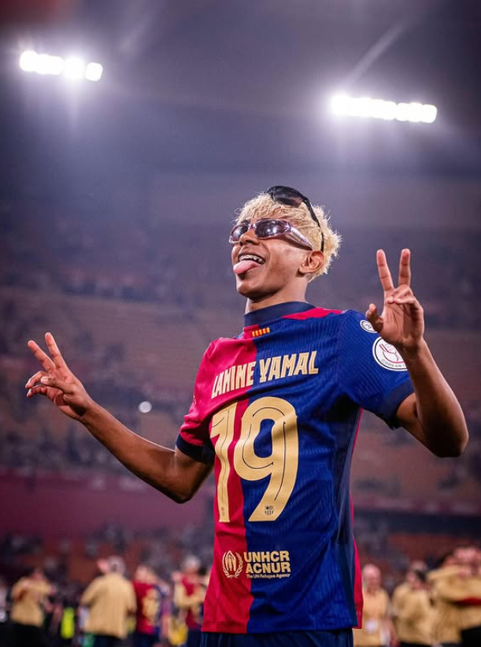
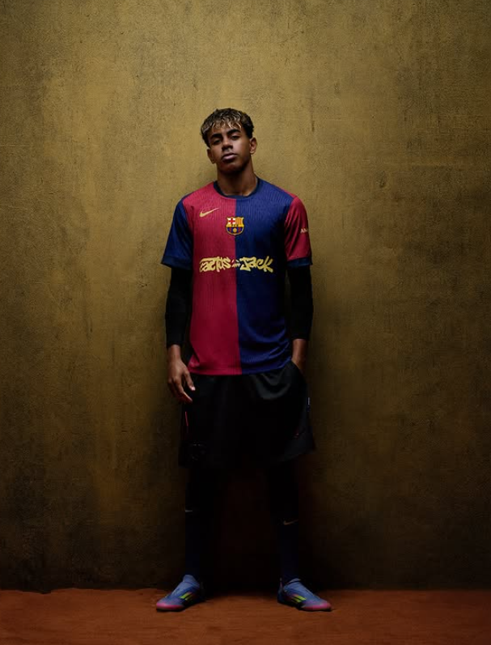

Lamine Yamal membuat dunia terkesima dengan penampilan gemilangnya di usia 17 tahun. Ia bahkan telah menjadi pilihan utama di Barcelona. Sejauh ini, ia telah memainkan lebih dari 100 pertandingan profesional dan mencetak 22 gol, sebuah pencapaian luar biasa untuk pemain seusianya.
Namun, di balik kehebatannya, jebolan La Masia itu justru membuat Barcelona ketar-ketir. Jika terlalu 'gacor' terlalu dini, hal itu berpotensi menghancurkan seluruh kariernya apabila tidak ditangani dengan benar. Barcelona harus punya program perlindungan dan pengembangan berkelanjutan bagi Lamine, untuk menghindari kesalahan yang sama seperti yang terjadi pada Ansu Fati.
Setelah dua musim, Lamine Yamal telah mencapai 100 pertandingan profesional — sesuatu yang langka untuk pemain di bawah usia 18 tahun. Jika tren ini berlanjut, ia bisa mencapai 500 pertandingan saat berusia 25 tahun, angka yang kerap dianggap sebagai batas fisik bagi pemain profesional. Itu adalah prospek yang mengkhawatirkan, mengingat sejarah sepak bola yang menunjukkan banyak pemain muda tenggelam setelah ketenaran dini karena eksploitasi berlebihan.
Di tengah krisis finansial dan minimnya kedalaman skuad, Barcelona menaruh harapan besar pada Lamine. Ia menjadi angin segar dalam tim yang kekurangan kreativitas dan sumber harapan ketika tim menemui jalan buntu. Namun, ketergantungan yang terlalu besar pada pemain muda ini bisa mengorbankan masa depannya demi kesuksesan jangka pendek.
Masalah yang dihadapi bukan hanya soal jumlah menit bermain, tetapi juga tekanan psikologis. Pemain ajaib berusia 17 tahun ini memikul tanggung jawab yang seharusnya menjadi beban pemain senior. Sorotan media, ekspektasi penggemar, dan tekanan internal klub bisa menjadi beban tak terlihat yang menggerus kepercayaan diri dan konsistensinya.